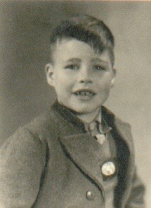
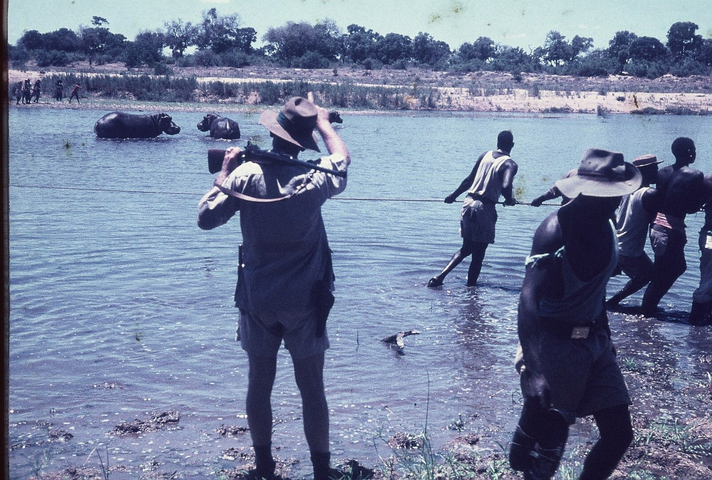
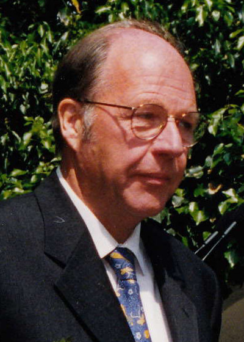
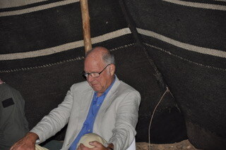
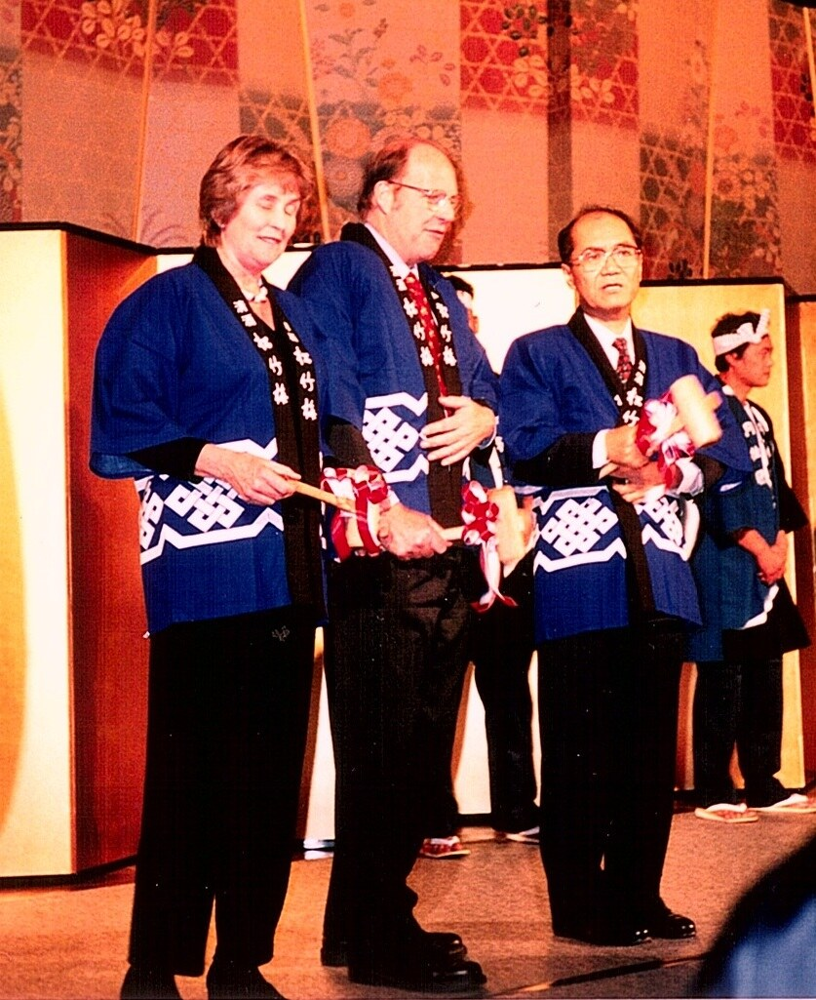
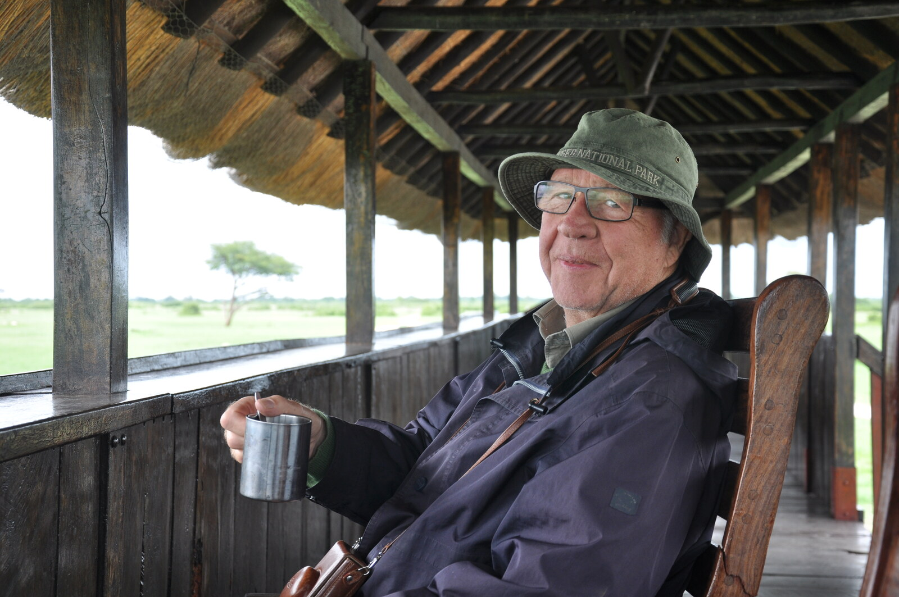
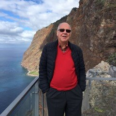

Im Rückblick lassen sich die verschiedenen Lebensphasen zu einer logischen Abfolge verbinden. Ein roter Faden wird sichtbar.
Die Familie als Urquelle
Er beginnt mit der Familie als Urquelle, aus der ich stets frische Kraft und Inspiration schöpfen konnte: mein harmonisches Elternhaus, wo sich alles um die Natur, den Wald und die Jagd drehte.

Dazu gehört auch das für mich so vorbildliche „Dreigestirn“ aus Großmutter Iltgen, meiner Mutter und der Patentante Conny. Während die Männer im Krieg und in der Kriegsgefangenschaft waren, hielten sie wie Pech und Schwefel zusammen und setzten alles daran, uns Kindern die Not nicht spüren zu lassen und uns eine christliche Lebensausrichtung und umfassende Bildung zu geben.
Der Kölner Dom über einem Meer von Trümmern
Eine prägende Kraft übten auf uns Kinder die ungeheuren Kriegszerstörungen und das damit verbundene menschliche Leid aus.
Als wir uns Anfang 1946 der Stadt Köln in unserem klapperigen Opel P4, Baujahr 1928, näherten, entsann sich meine Mutter einer Wette aus ihrer eigenen Kindheit und sagte: Wer zuerst den Dom sieht, bekommt 10 Reichspfennig. Kaum gesagt, zeigte ich schon unerwartet in die Richtung des gewaltigen Bauwerks und reklamierte das Preisgeld — denn der Dom war 1946 schon von weither sichtbar und nicht wie vor der Zerstörung Kölns und nach dem Wiederaufbau engstens umbaut.
So stand der Dom, einst das höchste Gebäude der Welt, majestätisch mit seinen 157 Metern erhoben da. Obgleich von 18 Bombenvolltreffern schwer beschädigt, ragte er gebieterisch über ein riesiges Meer von Trümmern, in denen hunderte von Frauen Schutt in Bergbauloren schaufelten. Der Rhein vor dem Dom war noch völlig unpassierbar, eine Art ungeordneter Schiffsfriedhof, bis zum Rand gefüllt mit den Überbleibseln einst stolzer Rheinbrücken und Lastkähnen.
Auf den provisorisch hergerichteten Straßen und Zugangspfaden fielen die zahlreichen Kriegsversehrten auf, manche ohne Arme und Beine, die sich qualvoll und hungrig auf stümperhaft gezimmerten Brettern mit Rollen fortbewegten — ein apokalyptischer Anblick, der mich noch heute verfolgt. Eine überzeugendere Anschauung zur Mahnung an den Frieden und die Ächtung des Krieges konnte es kaum geben.
Der Ziehvater für ökologisches Denken
Ein entscheidender Impulsgeber für meine Berufsausrichtung war mein Doktorvater, der bekannte Forstwissenschaftler Prof. Ernst Assmann. Unter seiner Leitung wurde im Jahr 1966 ein umfangreiches ökologisches Forschungsvorhaben im Ebersberger Forst bei München begonnen, das international als Ökologieprojekt Ebersberg bekannt wurde und sich zu einem wichtigen deutschen Beitrag zum Internationalen Biologischen Programm (IBP) entwickelte.
Assmann bat um meine Mitarbeit als sein wissenschaftlicher Assistent. Ich konnte bei ihm zwei Jahre später über das Ökologieprojekt Ebersberg an der Ludwig‑Maximilians‑Universität promovieren. In dieser Zeit wurde Assmann, der sich rührend um mich kümmerte, zu meinem Ziehvater für ökologisches Denken und Arbeiten. Er führte mich in die internationale Welt der ökologischen Forschungszusammenarbeit ein und gab mir Gelegenheit, den Stand der ökologischen Forschung in den USA kennenzulernen, ermöglicht durch ein Stipendium der Deutschen Forschungsgemeinschaft.
Negev — das entscheidende Sprungbrett
Gefördert von Assmann, durfte ich unter der Leitung von Prof. Otto Lange (Universität Würzburg) und Prof. Michael Evenari (Universität Jerusalem) an der ersten deutschen Forschungsexpedition nach Israel 1967 teilnehmen. In einem kleinen Team aus deutschen und israelischen Wissenschaftlern untersuchten wir die Funktionsweise des nabatäischen Sturzwasser‑Landwirtschaftssystems, das vor 2000 Jahren die Wüste Negev zu einer blühenden Landschaft, dem Palaestina salutaris, verwandelt hatte.
Angeleitet und geführt von Michael Evenari und Otto Lange, kam die Expedition zu neuen Erkenntnissen über die Anpassungsmechanismen von Wüstenpflanzen an die große Trockenheit und das Gedeihen von Kulturpflanzen. Jetzt konnte das Funktionieren der Sturzwasserfarmen der Nabatäer geklärt werden. Der meisterhafte Umgang der Nabatäer mit dem so spärlich vorhandenen Element Wasser kann auch heute noch als Vorbild dienen.
Ernst‑Detlev Schulze, später Professor für Pflanzenökologie an der Universität Bayreuth und Direktor des Max‑Planck‑Instituts für Biogeochemie in Jena, und ich selbst als wissenschaftliche Assistenten wurden nun endgültig in den Bann der ökologischen Forschung gezogen — durch die beiden charismatischen „Wissenschaftszaren“ Otto Lange und Michael Evenari. Es gab für uns beide kein Zurück mehr in den praktischen Forstdienst. Nur noch die Ökologie zählte. Ihre volle Bedeutung sollte bald jedem Forstmann klar werden, als drei Jahre später das große Waldsterben in Deutschland einsetzte.
In den Dienst der UNESCO
In der Nachbetrachtung war die Negev‑Expedition das entscheidende Sprungbrett für meine anschließende Karriere in der UN‑Sonderorganisation UNESCO. Sie begann mit einer Aufbauarbeit für das MAB‑Programm „Der Mensch und die Biosphäre“, das ich später für acht Jahre leiten sollte. Ziel dieses internationalen, interdisziplinären Forschungsprogramms war es, die Grundlagen für die nachhaltige Nutzung und Erhaltung der Ressourcen der Biosphäre und die Verbesserung der Beziehung zwischen Mensch und Umwelt zu schaffen.
Hier waren meine Lehrmeister der Gründungsvater von MAB, der Franzose Dr. Michel Batisse, und der spätere Gründungsdirektor der Abteilung für ökologische Wissenschaften in der UNESCO, Prof. Francesco di Castri. 1984 übernahm ich als Nachfolger von di Castri die Leitung der Abteilung für Ökologie.
In den Folgejahren wurde ich in zahlreiche internationale Gremien berufen, darunter auch solche, die sich mit den ethischen Aspekten der Mensch‑Umwelt‑Beziehung auseinandersetzten. Dazu gehörten die Päpstliche Akademie der Wissenschaften in Rom und das Umweltzentrum der Franziskaner in Assisi, das jährlich den Franziskus‑von‑Assisi‑Umweltpreis verlieh. Dort schloss ich bei reichlich Wein in den altehrwürdigen Klostergewölben Freundschaft mit einem Pionier des Artenschutzes in den USA — Peter Raven, damals Direktor des Botanischen Gartens in Missouri — und mit M. S. Swaminathan, dem Vater der Grünen Revolution in Indien. Wir erarbeiteten zusammen mit anderen Wissenschaftlern eine viel beachtete Umweltcharta.

Auf dem Amazonas — und ein Buch jenseits von Brundtland
Ich hatte das Glück, auf einer Bootsfahrt auf dem Amazonas, die Tom Lovejoy, damals Sekretär der Smithsonian Institution, organisierte, Robert Goodland von der Weltbank kennenzulernen. Wir beschlossen spontan, ein kritisches Buch über den Brundtland‑Report „Our Common Future“ herauszugeben. Es gelang uns, hierfür Autoren mit großem Namen zu gewinnen — wie etwa die Nobelpreisträger Trygve Haavelmo und Jan Tinbergen.
Unsere 100 Seiten umfassende Schrift „Umweltverträgliche nachhaltige wirtschaftliche Entwicklung jenseits von Brundtland“ wurde in zahlreiche Sprachen übersetzt und stand ganz oben auf der Hitliste der Umweltpublikationen. Dies war wohl einer der Beweggründe, dass mich der damalige Präsident der Weltbank, Barber Conable, bat, den Umweltbereich der Weltbank in Washington aufzubauen und zu leiten. Leider musste ich aus privaten Gründen frühzeitig absagen.
Die Gründung des Welterbezentrums
Dennoch wurde meine Qualifikation durch die Weltbank, die ich nicht unter Beweis stellen konnte, später von dem Generaldirektor der UNESCO, Federico Mayor, als Auszeichnung gewertet. Ich hatte plötzlich Gehör auf der höchsten UNESCO‑Etage. Federico Mayor folgte bereitwillig meinem Vorschlag, ein UNESCO‑Welterbezentrum zu gründen, das die bisher getrennten Bereiche des Weltnatur- und Kulturgüterschutzes zusammenführen sollte.
Er bat mich als Gründungsdirektor auch, den Weltkulturgüterschutz zu übernehmen, was hohe Wellen im Kultursektor der UNESCO schlug. Nun war ich gefordert, der Umsetzung der Welterbe‑Konvention ein neues Gesicht zu geben und die enge Verbindung von Natur- und Kulturgüterschutz wieder herzustellen, die in der Konvention selbst zum Ausdruck kommt, aber vernachlässigt worden war. Kurz nach Gründung des Zentrums gelang dann auch die Anerkennung außergewöhnlicher Kulturlandschaften als Welterbe. Solche Kulturlandschaften sind großartige Zeugnisse für das Zusammenwirken von menschlichem Kulturschaffen und der Natur.
Mit einem jungen Team von hochmotivierten Mitarbeiterinnen und Mitarbeitern gelang es Zug um Zug, das enorme Potential der Konvention für internationale Zusammenarbeit auszuschöpfen und das Welterbe zum Markenzeichen der UNESCO zu entwickeln.
Ein Aufruf zur Öko‑Kultur
In meiner langjährigen (40 Jahre) internationalen Arbeit auf den Gebieten der ökologischen Wissenschaften, des Natur- und Kulturgüterschutzes hatte ich hautnahe Berührung mit den großen Umweltproblemen unserer Zeit — aber auch mit der Zerstörung und Vernachlässigung der Kulturgüter in Kriegs- und Friedenszeiten. Diese Erfahrung bewegt mich zu einem ermahnenden Aufruf an alle, die mit mir die gleiche Sorge um die Zukunft der Menschheit teilen — denn mehr denn je braucht die Menschheit langfristiges Denken und Handeln.
Der Artenreichtum in der Natur und die faszinierende kulturelle Vielfalt, die wir noch in unserer heutigen Welt vorfinden, verdanken wir schließlich der fürsorglichen Mühe derjenigen, oft in der Minderheit befindlichen Individuen, die vor uns verantwortungsbewusst handelten. Wir sind aufgerufen, diesen Vorbildern nachzueifern und uns als nachhaltige Erblass‑Verwalter zu betätigen, damit wir den berechtigten Erwartungen künftiger Generationen gerecht werden.
Dass dies heute nicht der Fall ist, zeigt der erschreckende Artenschwund in einer in der Menschheitsgeschichte bisher unbekannten Größenordnung, die Zerstörung oder Vernachlässigung zahlreicher unwiederbringlicher Zeugnisse der materiellen und immateriellen Kultur — oder gar der vom Menschen hervorgerufene Klimawandel, der alle und alles trifft, keinen Unterschied macht zwischen Arm und Reich, Nord und Süd, und sowohl Kultur- wie Naturgüter vernichten kann.
Dies sind nur einige eindringliche Beispiele, die zeigen, dass wir unserer ethischen, evolutionären Verantwortung für das Leben auf der Erde und die Erhaltung der kulturellen Vielfalt nicht gerecht werden. Uns scheint nicht bewusst zu sein, dass wir nur Teilhaber an den begrenzten biologischen und kulturellen Ressourcen unserer Erde sind — im Verbund mit den unzähligen, unsichtbaren „Stakeholdern“: all denen, die vor uns lebten oder uns nachfolgen werden. Die große Aufgabe des fürsorglichen Schutzes und der nachhaltigen Pflege und Nutzung der begrenzten genetischen und kulturellen Ressourcen stellt sich der Menschheit als Ganzes.
Daher ist das heutige Bemühen um den Erhalt der biologischen oder auch kulturellen Vielfalt im Interesse künftiger Generationen nur dann erfolgreich, wenn alle mitmachen — kein Land kann dies im Alleingang bewerkstelligen. Es handelt sich hier um eine vorrangige und dringliche Aufgabe für die internationale Zusammenarbeit, die weltumspannend mit höchster Intensität und Priorität in Angriff genommen werden muss. Denn es geht um die Infrastruktur des Lebens auf unserer Erde als zivilisierte Welt.
Wir dürfen nicht vergessen, dass alles Leben auf unserem Planeten von den 300 000, zum Teil bereits vom Untergang bedrohten Pflanzenarten abhängt — denn diese allein sind in der Lage, den lebenswichtigen Sauerstoff zu erzeugen. Aber auch die kulturelle Vielfalt zu erhalten ist lebenswichtig für eine zivilisierte Welt, denn sie ist eine wesentliche Grundlage für eine weiterhin hohe Kreativität und für sich gegenseitig befruchtendes kulturelles Schaffen.
Statt eines Diktates der Ökonomie — vor allem durch die Finanzwelt, mit kurzfristigen Marktinteressen und rein wachstumsorientiertem Handeln, einer Welt hoher Volatilität und Instabilität — benötigen wir dringend den Kurswechsel und den Eintritt in eine neue Ära der „Öko‑Kultur“. In ihr wird jedes menschliche Handeln der Hauptzielsetzung unterworfen, das Überlebenssystem der Erde intakt zu lassen, es nicht zu gefährden und die bereits stark geschädigten Teile der Infrastruktur des Lebens wieder zu reparieren.
Auch hier geht es um beides — sowohl um die Erhaltung des Naturerbes wie auch um den Schutz des Kulturerbes der Menschheit.
Natürliche und kulturelle Vielfalt sind kein Luxus. Wir brauchen diese Vielfalt, um für die Zukunft Alternativen für eine nachhaltige Entwicklung offenzuhalten. Die natürliche Vielfalt ist die beste Garantie für eine erfolgreiche Anpassung des Lebens auf der Erde an eine durch den Menschen sich immer schneller und drastischer verändernde Welt — eine Welt, in der die Menschheit nicht nur in ihrer physischen Existenz dahin vegetiert, sondern nach kultureller Entwicklung strebt, die sich durch Nachhaltigkeit, Gerechtigkeit und Sozialverträglichkeit auszeichnet, eine Menschheit, die ethisch handelt.
Aus einem Leben






Erfahren Sie mehr über das Buch »Welterbe in Gefahr« oder entdecken Sie die interaktive Weltkarte mit allen 58 bedrohten Stätten.